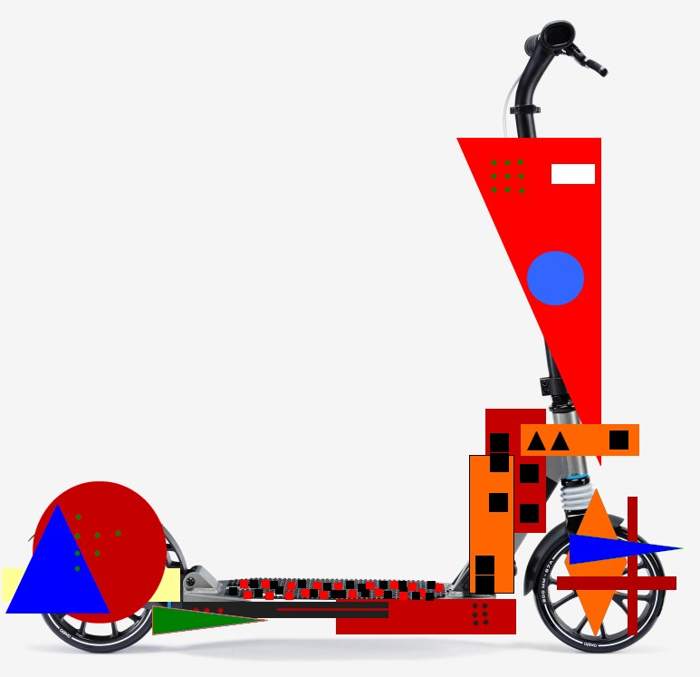
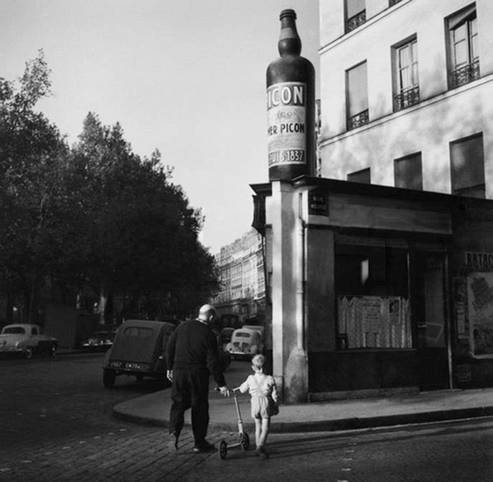
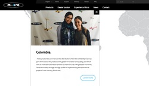

De todo y de nada relacionado con este sitio y sus alrededores...
04 de septiembre de 2019. Monopatín constructivista

10 de julio de 2019. Pasaba un monopatín

La foto (por el fotógrafo francés Robert Doisneau) es del fin de los años 50, principio de los 60.

30 de marzo de 2019. Micro : la conocida y reconocida marca suiza de monopatines Micro (Micro Mobility Systems AG) esta presente en Colombia desde el año 2012. En Colombia, el negocio empezó por ventas de productos de Micro Mobility en tiendas de juguetes. Ulteriormente se ha convertido en una empresa enfocada en la distribución de forma exclusiva de los productos Micro Mobility para el mercado colombiano : Micro Colombia.
13 de marzo de 2019. Trending : en el curso de por lo menos esos dos últimos años, hubo varios artículos en la prensa a propósito de la moda de la ropa estilo militar : military fashion. En the New Yorker del 06 de marzo de 2019 se publicó el artículo : From Grunt Style to “Warcore,” Civilians Are Embracing Military Fashion (Desde el estilo Soldado Raso hasta "Accesorios Militares" los civiles están abrazando la moda militar). Según las palabras del autor del artículo eso corresponderia a nuestro tiempo de guerra sin fin, de consumo a rajatabla, de fuerte estrataficación social. Hemos editado un vídeo de lo que podria ser un anuncio de monopatín, inspirado por esta moda : Urban Mobility Tactical Gear.